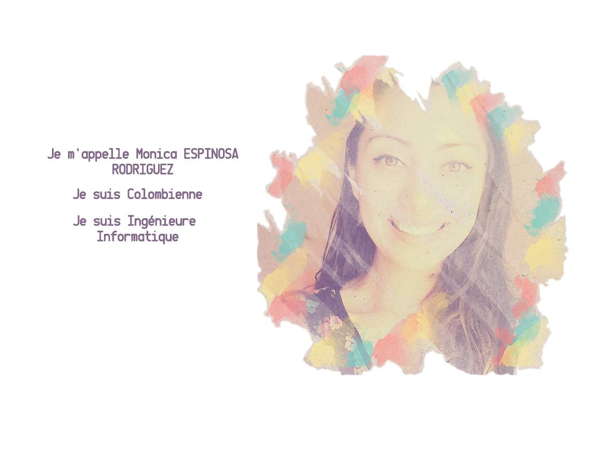

Qui Suis-Je?


Je m’appelle Monica ESPINOSA RODRIGUEZ. Je suis Colombienne et je suis ingénieure d'informatique. Passionnée, curieuse, persévérante, j’aime apprendre de nouvelles choses et faire partager mes connaissances. j'aime le partage des idées et l’exploration des autres areas.